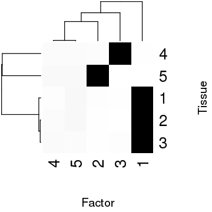

Dense factors
Table of Contents
Introduction
In our simulations, fqtl fails to correctly estimate the rank of the
factorization when there is a true dense tissue factor. The problem is worse
in the real data application.
Methods
Idealized simulation
Simulate the easiest version of the problem.
\[ \newcommand\my{\mathbf{Y}} \newcommand\mx{\mathbf{X}} \newcommand\mi{\mathbf{I}} \newcommand\md{\mathbf{D}} \newcommand\mb{\mathbf{B}} \newcommand\vl{\mathbf{l}} \newcommand\vf{\mathbf{f}} \]
\[ \underset{n \times m}{\my} \sim \mathrm{MN}(\underset{(n \times p)}{\mx}\underset{(p \times m)}{\mb}, \underset{n \times n}{\mi}, \underset{m \times m}{\md}) \]
\[ \md = \operatorname{diag}(\sigma^2_1, \ldots, \sigma^2_m) \]
\[ \mb = \underset{(p \times 1)}{\vl} \underset{(1 \times m)}{\vf'} \]
\[ \vl_j \sim \pi_0\delta_(\cdot) + (1 - \pi_0)\mathcal{N}(0, 1) \]
\[ \vf \sim \mathcal{N}(0, \mi) \]
mnorm <- function(n, p) { return(matrix(rnorm(n * p), n, p)) } sim_idealized <- function(n, p, m, pve, seed) { set.seed(seed) x <- mnorm(n, p) l <- rep(0, p) l[1] <- 1 f <- rnorm(m) b <- tcrossprod(l, f) y <- x %*% b e <- sweep(mnorm(n, m), 2, sqrt((1 / pve - 1) * apply(y, 2, var)), '*') y <- y + e return(list(x=x, y=y, l=l, f=f)) } get_fqtl_est_rank <- function(res, thresh=log(0.95 / 0.05)) { keep <- apply(res$mean.left$lodds > thresh, 2, any) & apply(res$mean.right$lodds > thresh, 2, any) return(sum(keep)) } eval_fqtl_est_rank <- function(ntrials, k=NULL) { ## Important: SGVB is a stochastic algorithm, so it can get different answers ## even starting from a deterministic initialization. ## ## This particular simulated dataset reveals the problem we want to ## investigate. data <- sim_idealized(n=100, p=500, m=5, pve=0.5, seed=1) shape <- dim(data$y) if (is.null(k)) { k = min(shape[1], shape[2]) } res <- lapply(1:ntrials, function (i) { res <- fqtl::fit.fqtl( y=scale(data$y), x.mean=scale(data$x, scale=FALSE), k=k, factored=TRUE, do.hyper=TRUE, svd.init=TRUE, ## Important: print.interv=1 needed for full llik trace vbiter=5000, verbose=FALSE, print.interv=1, rseed=i) list(llik=sum(res$llik[dim(res$llik)[1],]), rank=get_fqtl_est_rank(res)) }) return(do.call(rbind, res)) }
Results
Idealized example
Simulate a single example. Then, fit the model with \(k = 5\) (as in the benchmark). Look at different restarts from the same (deterministic) initialization.
eval_fqtl_est_rank(ntrials=3, k=5)
llik rank
[1,] -0.4519325 3
[2,] -0.4532069 2
[3,] -0.4905046 2
Now fit the model with \(k = \min(n, m)\), as in the real data analysis.
eval_fqtl_est_rank(ntrials=3)
llik rank
[1,] -0.4519325 3
[2,] -0.4532069 2
[3,] -0.4905046 2
Look at the initialization.
data <- sim_idealized(n=100, p=500, m=5, pve=0.5, seed=1) svd(crossprod(scale(data$x, scale=FALSE), scale(data$y)) / shape[1])$d
[1] 4.115281 1.699439 1.432982 1.382543 1.359158
Idea: Should we use Tracy-Widom, sparse PCA, or even Empirical Bayes to estimate lower rank \(\mx'\my\) to use as initialization?
Look at the estimated factors.
res <- fqtl::fit.fqtl( y=scale(data$y), x.mean=scale(data$x, scale=FALSE), k=5, factored=TRUE, do.hyper=TRUE, svd.init=TRUE, vbiter=5000, verbose=FALSE, print.interv=1, rseed=1)
png('/project2/mstephens/aksarkar/projects/gtex_fqtl_2018/org/figure/dense.org/idealized-example-fhat.png', width=360, height=360, res=120) par(cex.lab=2, cex.axis=2) heatmap(res$mean.right$lodds, col=colorRampPalette(c('white', 'black'))(256), xlab='Factor', ylab='Tissue') dev.off()
